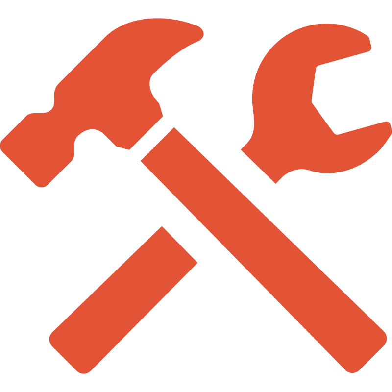

Use the green button to edit the resource (moderated: it may take a few days before changes appear).

OpenRiCOpenRiC is an open specification for publishing and exchanging archival description as Records in Contexts over plain HTTP: a JSON-LD API following RiC-O 1.1, a mapping from ISAD(G), ISAAR(CPF), ISDIAH and ISDF that follows RiC-AG's crosswalks, named conformance profiles, JSON Schemas and SHACL shapes, a fixture pack, and a conformance probe that tests any server. Think of IIIF for images: a shared contract, not a product.
It is an independent project, not issued or endorsed by the ICA or EGAD, and adds no terms to the RiC-O namespace; its own extension terms live in a separate one. The specification is CC BY 4.0 and the software is AGPL-3.0. A reference API, a graph viewer and a modelling wizard show it working on demonstration data, and the specification can be tested from a signed release without any of AHG's code (https://openric.org/guides/evaluate-independently.html). Reviews of the mapping, the API or its usefulness to archivists are welcome at https://openric.org/review/.
Proof of concept. Specification v0.49, before 1.0; one reference implementation. A second, independently built implementation is the condition for v1.0.